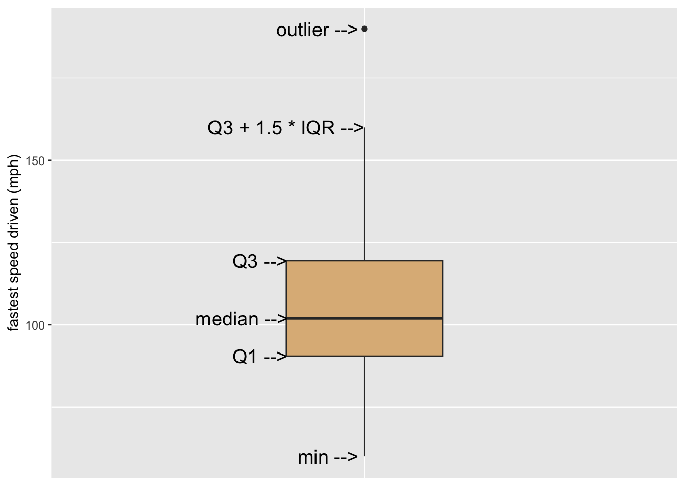
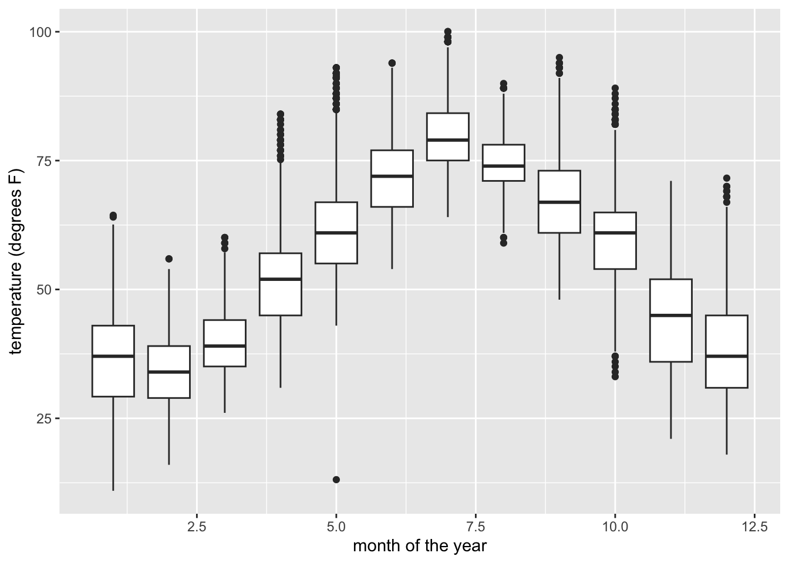

2 Grammar of Graphics
For this Chapter we need:
library(mdsr)
library(tidyverse)
library(mosaicData)
library(bcscr)
library(nycflights13)2.1 The Grammar of Graphics
New names for graph concepts:
- frame
- glyphs
- aesthetics
- scales
- guides
ggplot2 is a graphics system that tries to implement the grammar of graphics faithfully.
It’s hard to succinctly describe how ggplot2 works because it embodies a deep philosophy of visualisation.
—Hadley Wickham (creator of ggplot2)
It’s a good idea eventually to study the online documentation for ggplot2:
2.2 The Frame
The frame is the relationship between position and the data being plotted.
The frame corresponds to the visual cues of location.
- The frame provides the space in which we will draw glyphs.
- The frame determines what positions means.
- We work with 2D-graphs, so often we specify the frame with two variables.
- But often we need only one variable. (R will know what to do with the other dimension.)
In general, you set up the frame like this:
ggplot(
data = yourData,
mapping = aes(
x = xVariable,
y = yVariable
)
)Example (try it)!
No data showing yet!
Note
Usually we don’t name the arguments:
ggplot(m111survey, aes(x = fastest, y = GPA))
Note
We can also use the pipe-operator %>%:
2.3 Glyphs
A glyph is the basic graphical unit that corresponds to a case in the data table.
- You can see glyphs.
- Each glyph is formed from at least one case.
- The location of each glyph is determined by the variable(s) that defined the frame.
In the m111survey graph, let’s represent each student (case) with a point.
The points are the glyphs.
- This time each glyph goes with one exactly one case.
- The x-coordinate is determined by the value of
fastestfor the case. - The y-coordinate is determined by the value of
GPAfor the case.
2.4 Aesthetics
An aesthetic is a perceptible property of a glyph that varies from case to case.
(“aesthetic” and “visual cue” mean about the same thing.)
We already know two aesthetics:
- location in the x-direction
- location in the y-direction
Some other possible aesthetics are:
- size
- color
- shape
Let’s use the color of each point to indicate the sex of the student.
We are mapping the aesthetic color to the variable sex.
Let’s also map the aesthetic “size” to the variable height.
Yuck!
2.5 Scales and Guides
A scale is the relationship between the value of a variable and the graphical attribute to be displayed for that value.
Example: we mapped color to sex. R chose to set the value “female” to a reddish color, and the value “male” to a turquoise-blue color. That choice was the choice of a scale. (You can make R use a different scale if you like.)
Every aesthetic mapping involves a scale. R has default scales ready to use, if you don’t choose your own.
2.5.1 Example: Color Scale
Let’s specify our own color-scale:
This scale maps:
- “female” to pink
- “male” to red
2.5.2 Example: Log Scale
Let’s learn about CIACountries in the package mdsr:
CIACountries %>%
DT::datatable(options = list(scrollX = TRUE))
Note
When you are working in R Studio, use:
library(mdsr)
help("CIACountries")
View(CIACountries)Plot Gross Domestic Product against educational level:
Many countries “crammed together” near the bottom.
The solution is to use a log-scale for the y-axis:
2.6 Guides
A guide is an indication, for the human viewer, of the scale being used in an aesthetic mapping.
Guides are part of the context. A guide takes you backwards: from the perceptual property to the data value it represents.
Examples of guides:
- Labels and tick-marks along the x-axis show you the scale for the x location aesthetic.
- Labels and tick-marks along the y-axis show you the scale for the y location aesthetic (if one is defined).
- Legends show guides for aesthetics such as color, size and shape.
Let’s put in some more guides for our graph:
Important
Building a Graph in ggplot2:
- Describe the frame
ggplot(aes(x = xvar, y = yvar))
- Choose a glyph style
geom_glyphType()
- Map glyph properties to variables
geom_glyphType(aes(prop1 = var1, prop2 = var2, ...))
- Add context/guides
- labs(x, y, title, subtitle)
To layer, repeat steps 2 and 3 above for new glyphs.
2.7 Layering
To add a layer, add a glyph-type. Example: add a smoother to our plot:
Here we add a regression line instead of a curve:
2.8 Facets
Back to the CIACountries data. Instead of mapping color to net_users, we could facet by net_users:
How do we get rid of that empty NA plot? Here’s how:
2.9 Aesthetics vs. Fixed Properties
Below, size of the points is mapped to height:
But we can also make size a “fixed property”:
Note that size is set outside of the call to aes().
Here, color is a fixed property:
Note that color is set outside of the call to aes().
2.10 Univariate Displays
Learn about the Current Population Survey, 1985.
library(mosaicData)
?CPS85
View(CPS85)2.10.1 Histograms
Histograms are seful for a numerical variable:
2.10.2 Density Plots
Density plots are also useful for a numerical variable:
There is an outlier:
CPSBig <-
CPS85 %>%
filter(wage > 35)
CPSBig wage educ race sex hispanic south married exper union age sector
1 44.5 14 W F NH NS Single 1 Not 21 managLet’s remove it:
CPSSmall <-
CPS85 %>%
filter(wage <= 35)2.10.3 Bar Graphs
These are good for tallies of a categorical variable:
2.11 Bar Graphs: Arbitrary Y-Axis
?SAT_2010Mean Math SAT score for ten randomly selected states:
You can order the states by their mean SAT scores:
Let’s pretty this up a bit:
2.12 Multivariate Displays
2.12.1 Violin Plots
Useful for displaying relationship between a numerical and a categorical variable.
Let’s layer by adding a jitter-plot:
2.12.2 Boxplots
Also useful for displaying relationship between a numerical and a categorical variable.
2.12.3 What Box-Plots Tell Us
In a list of values:
- the first quartile \(Q_1\) is a number that has about 25% of the values less than it
- the third quartile \(Q_3\) is a number that has about 75% of the values less than it
- \(Q_1 - Q_3\) is called the interquartile range (IQR).
- the median is a number that has about 50% of the data below it
\(Q_3 - Q_1\) is called the interquartile range (IQR).
For Each Sector in CPSSmall, we can find the five-number summary:
mosaic::favstats(wage ~ sector, data = CPSSmall)[1:6] sector min Q1 median Q3 max
1 clerical 3.00 5.2000 7.500 9.5000 15.03
2 const 3.75 7.2250 9.750 11.6275 15.00
3 manag 1.00 7.1250 10.620 15.8550 26.29
4 manuf 3.00 4.9250 6.750 9.8725 22.20
5 other 2.85 5.0000 6.940 10.8150 26.00
6 prof 4.35 7.5000 10.610 15.3800 24.98
7 sales 3.35 4.3125 5.725 10.8325 19.98
8 service 1.75 3.9650 5.500 8.0000 25.002.12.3.1 Boxplot, No Outliers
When there are no outliers:
- lower whisker goes from minimum value to \(Q_1\) (extends along lowest 25% of the values)
- box from \(Q_1\) to \(Q_3\) shows middle 50% of the values
- the median is the line inside the box
- upper whisker goes from \(Q_3\) to the maximum value (extends along highest 25% of the values)
2.12.3.2 Boxplot, With Outliers
- If a value is bigger than \(Q_3 + 1.5 \times IQR\) then it is plotted individually as an outlier.
- Then the upper whisker goes from \(Q_3\) to the highest value that is not an outlier.
- If a value is less than \(Q_1 - 1.5 \times IQR\) then it is plotted individually as an outlier.
- Then the lower whisker goes from \(Q_1\) to the lowest value that is not an outlier.

2.13 More Variables: Facets
You can incorporate additional variables by facetting.
Of course you can also incorporate additional variables by aesthetic mapping:
2.13.1 Scatter Plots
These are useful for studying the relationship between two numerical variables.
Example:
This seems wrong!
Let’s consider a lurking variable:
Let’s group the states by the percentage of their students that took the SAT:
SATgr <-
SAT_2010 %>%
mutate(
SAT_rate = cut(
sat_pct,
breaks = c(0, 30, 60, 100),
abels = c("low", "medium", "high")
)
)Now let’s map color to the groups:
2.13.2 Line Plots
These are also useful for studying the relationship between two numerical variables, especially when one of then is time.
Example: world records in the 100-meter freestyle.
2.13.3 Baby Names
Learn about babynames in the babynames package:
library(babynames)
?babynames
View(babynames)Popularity of my name over time (try yours, too!:
Let’s study some unisex names:
Another way to investigate this:
- aesthetic mapping for
sex - facet for
nameonly:
2.14 A Difficulty: Numeric “Groups”
Learn about the data table weather from the package nyclights13:
library(nycflights13)
help(weather)
View(weather)Here is our goal-plot:

Our first try:
The diagnosis:
monthis a numeric variable!- so ggplot2 does not know how to group the temperatures to make separate boxplots for each group!
One solution is to make a categorical variable out of month:
Another Solution is to introduce the group aesthetic: